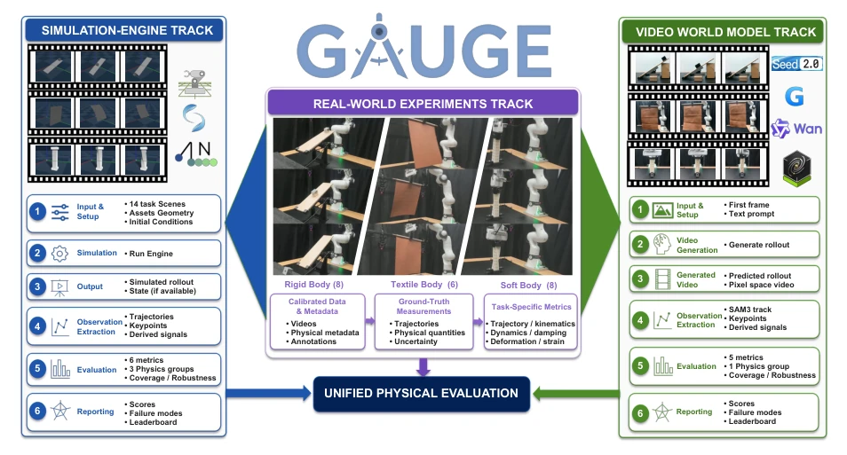
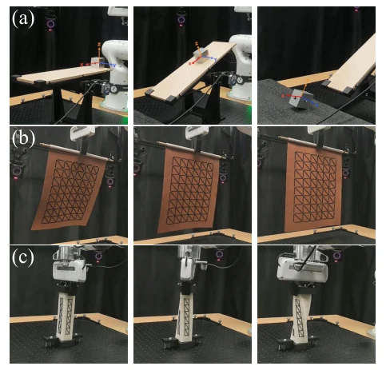
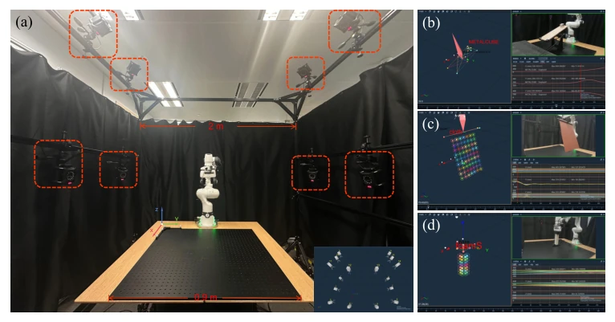
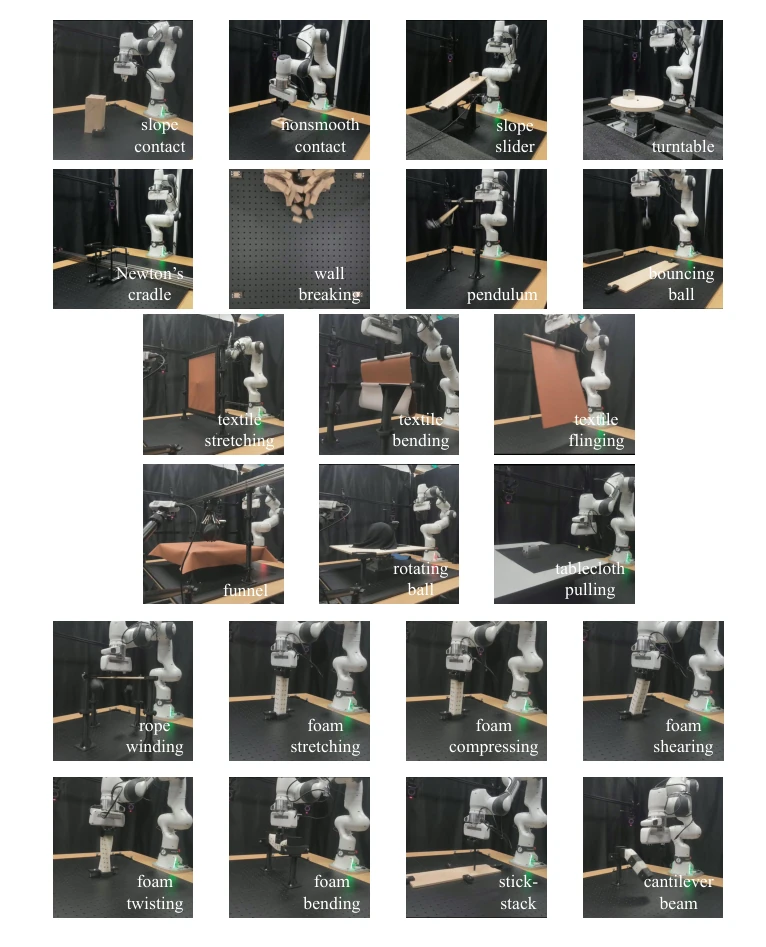
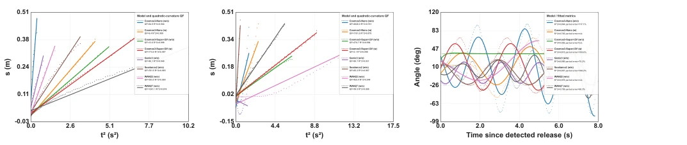
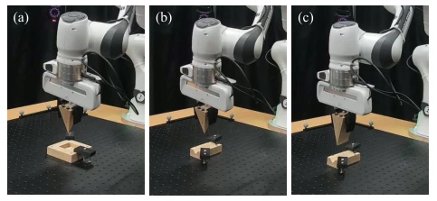
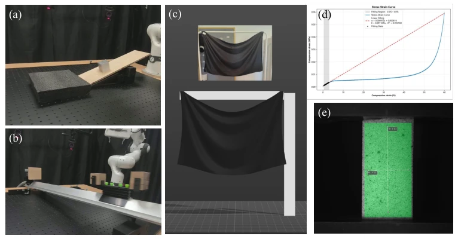
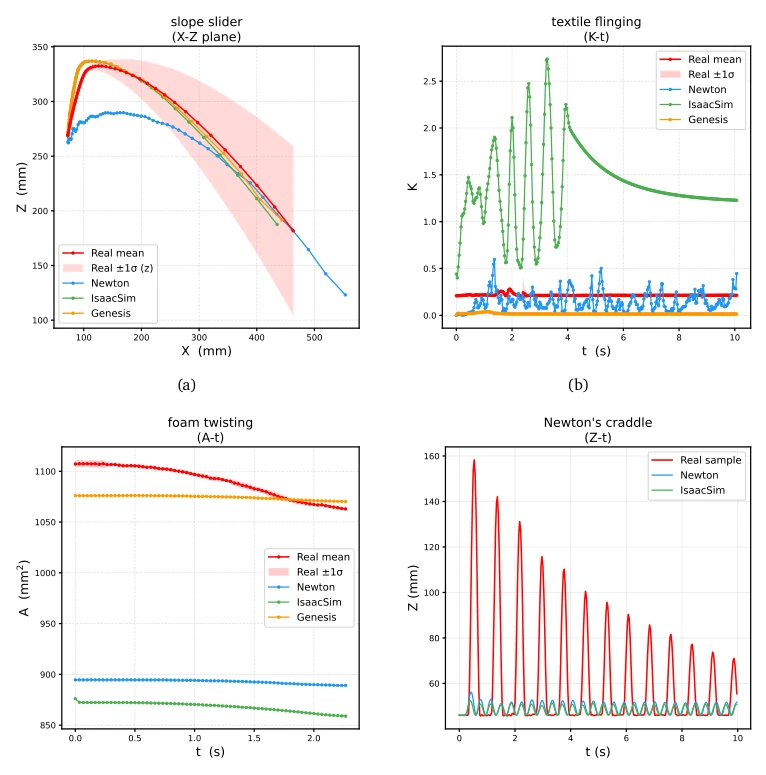
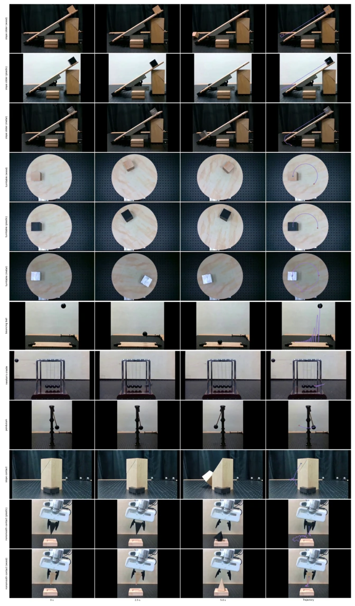
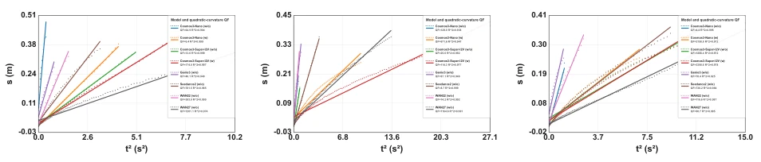

This paper casts a sobering light on the "physical hallucination" of Embodied AI. GAUGE eschews superficiality, directly employing millimeter-level motion capture ground truth to scrutinize simulators. Isaac Sim performs adequately in rigid body contact, but exposes limitations when it comes to soft bodies; world models are even more "formally similar but substantively different," with correct formulas but erroneous parameters, such as pendulum periods differing by a factor of two. This benchmark serves as a sobering shot for physics engines and world models. However, although the 22 tasks are comprehensive, material types remain few, fluids are completely untouched, evaluation for complex interactions still relies on 2D trajectories, and 3D deformation evaluation still relies on estimation. Overall, it is a good ruler, but has not yet measured all physical laws; future work requires further enhancement. It reveals that current simulators lack universality and world models lack physical consistency, pointing the direction for subsequent research.
Existing evaluations mostly rely on human subjective judgment or visual similarity, such as Videophy-2 [2] and PhyGenBench [9], unable to locate specific physical parameter errors. Physical engine validation is often limited to single object categories, and parameter fitting and evaluation are conflated [3, 11]. World model evaluation often ignores the distinction between equation form and parameter accuracy [13, 16]. GAUGE aims to solve the problem that "high visual fidelity does not equal physical dynamics accuracy," providing a diagnostic benchmark based on real measurement data, clearly distinguishing rigid, fabric, and soft bodies' fidelity under different physical mechanisms, filling the gap in cross-regime physical parameter annotation, ensuring evaluation results are reproducible and interpretable.
The overall process is divided into data collection and dual-track evaluation. First, 22 controlled task families are constructed, covering rigid bodies, ropes, fabrics, and volumetric deformable bodies, utilizing millimeter-level motion capture systems to obtain real trajectories and physical parameters (friction, stiffness, etc.). Evaluation is divided into two tracks: Physics Engine Track (Isaac Sim, Genesis, Newton) directly compares simulated trajectories with real data, using generalized trajectories (position, curvature, area) to calculate RMSE/DTW and specific physical metrics (such as momentum transfer efficiency, energy loss); World Model Track (Cosmos, Wan, etc.) generates video from single frames, extracting 2D trajectories via SAM3, evaluating physical equation form consistency (R2, QFI) and parameter accuracy (acceleration, period). The innovation lies in unifying measurement standards for different physical mechanisms, and introducing calibrated physical metadata as the basis for scene reconstruction, achieving end-to-end diagnosis from vision to physical parameters, avoiding the misleading nature of purely visual evaluation.

Figure 1. Overview of GAUGE. Controlled real-world experiments provide calibrated physical metadata and motion-capture ground truth for rigid bodies, textiles, and volumetric deformable bodies. The physics-engine track (left) compares trajectories from matched simulated scenes with real measurements. The video world-model track (right) generates future motion from an initial frame and prompt, then evaluates the tracked motion in terms of physical laws and parameters.

Figure 2. Generalized trajectories used for physics-engine evaluation. (a) Rigid-body motion is represented by object position P; the example compares the real mean and uncertainty band with three simulated trajectories in the 𝑋–𝑍plane. (b) Textile deformation is represented by marker-wise Gaussian curvature K on the tracked surface mesh. (c) Volumetric deformable body deformation is represented by the areas A of triangular faces formed by neighboring markers.

Figure 3. Real-world motion-capture system and representative tracking configurations.

Figure 5. Overview of GAUGE’s 22 standardized real-world task families.
Tested 3 physics engines on 14 tasks, 6 video world models on 5 tasks. Results show no engine is optimal in all regimes; Isaac Sim is good at rigid body contact, Genesis is strong at soft bodies, but soft body fast motion error is large (e.g., textile flinging error exceeds 100 times). Regarding world models, Wan-2.2, etc. can fit oscillation forms (high R2), but period error is significant (e.g., pendulum differs by 73%). Negative prompt effects are unstable. The main finding is models often generate trajectories matching equation forms but with wrong parameters, such as large free fall acceleration deviation. This indicates visual fidelity cannot represent physical reality, requiring combination with parameter evaluation.

Figure 4. Representative physical-law fits for generated videos. Displacement is plotted against squared time for (a) the wood slope slider and (b) the free-fall segment of the bouncing ball; uniform acceleration should produce a straight line. (c) Tracked pendulum angles and fitted oscillations after release. Dotted curves are recovered trajectories and solid curves are physical-model fits; the legends report QFI or fitted parameters. Differences in slope, curvature, period, and damping reveal errors not captured by visual plausibility alone.
其他图片Other Figures

Figure 6. Geometry variants of the nonsmooth contact task.

Figure 7. Experimental characterization and validation of task-specific physical parameters.

Figure 8. Representative generalized trajectories used for physics-engine evaluation. Red curves and bands in (a)–(c) show the real-world mean and ±1𝜎across repeated trials, while the remaining curves show simulator outputs; (d) compares a representative real trial with the available simulations.

Figure 9. Example of qualitative trajectory visualization for physical realism evaluation. The last three rows of the figure correspond to the inference results of "slope contact" and "non-smooth contact". Since these scenarios exhibit substantial 3D geometric deformations and discontinuous object states, they are excluded from the subsequent quantitative evaluation.

Figure 10. Slope-slider trajectories for the three materials. Points are the retained, unfiltered projected displacements, and solid lines are the linear fits in 𝑠versus 𝑡2. A visually linear trajectory may still have the wrong slope and hence the wrong acceleration.